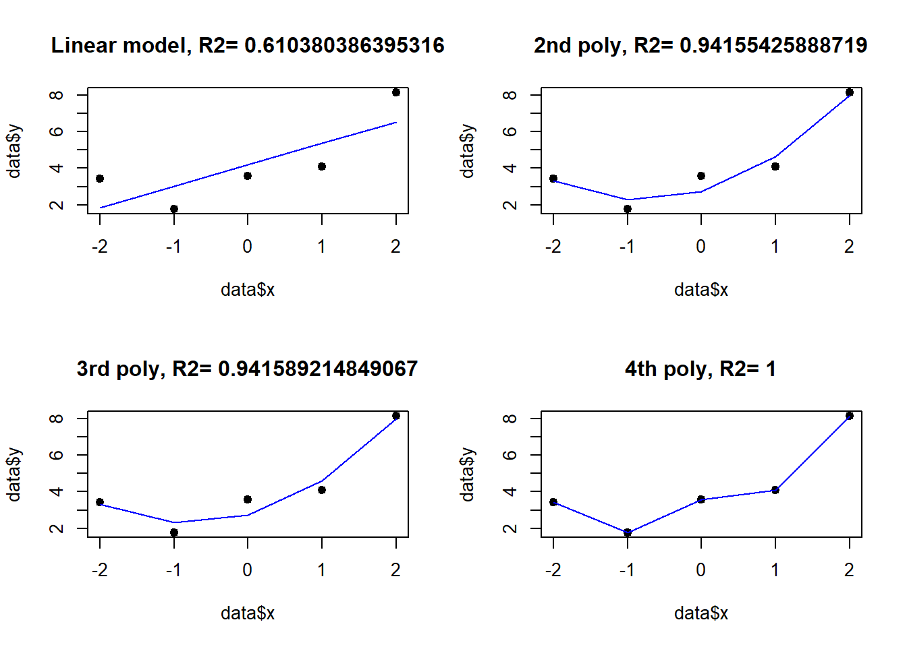
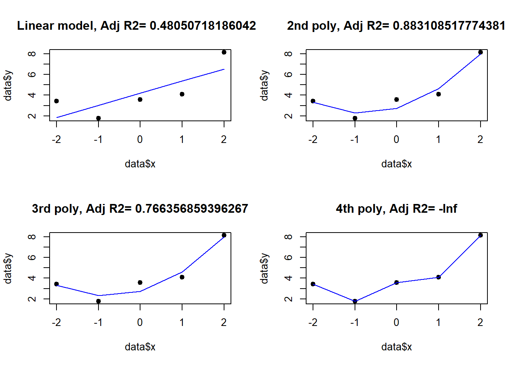
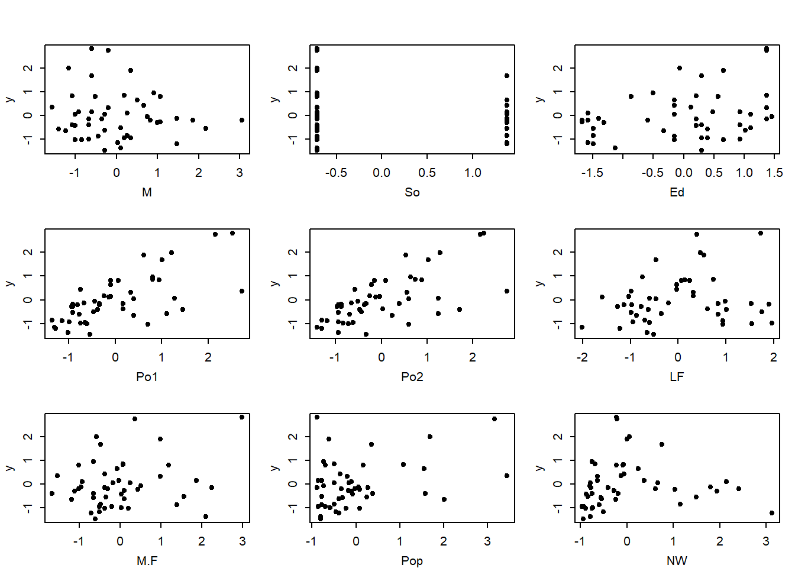
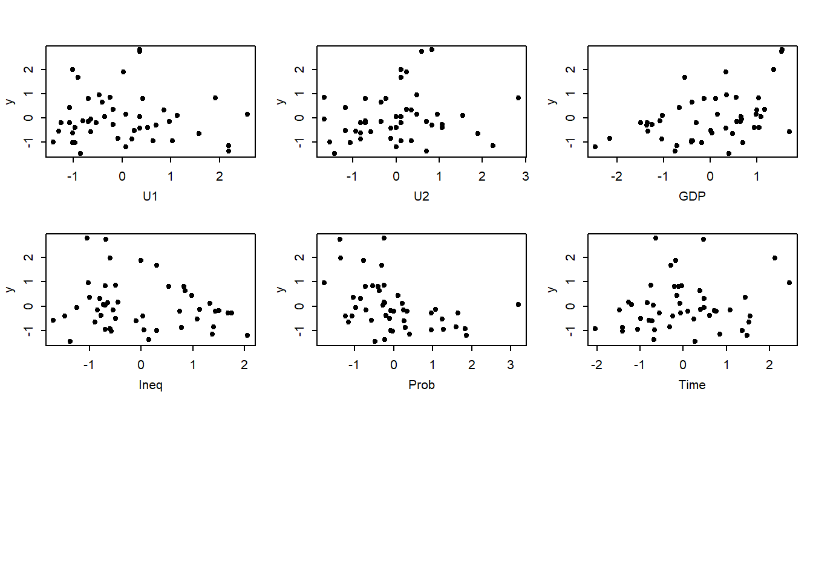
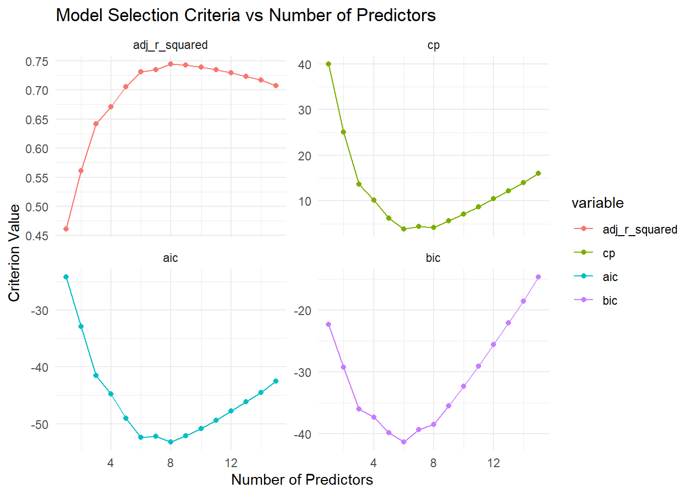
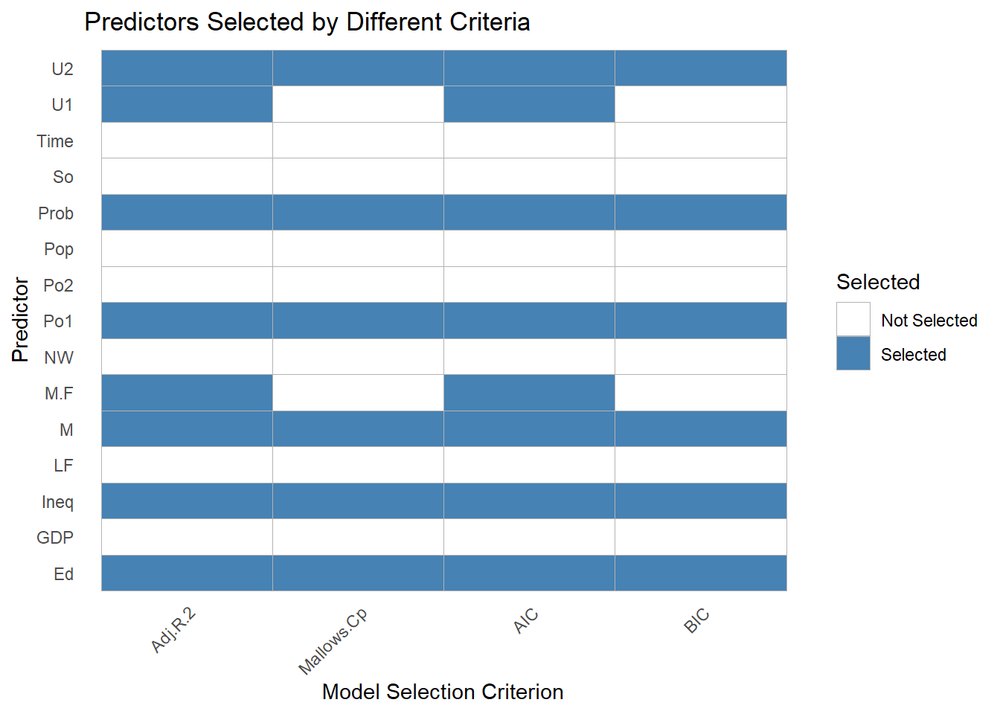

Lec 14-15: Multiple Linear Regression - Model Selection
1 Review
1.1 Review: Lecture 01-06
- Lectures 01-06: SLR: least squares estimate, inference (CI, prediction, t-test, F-test), diagnostics, transformations, ANOVA, lack of fit test.
- Lectures 07-11: Multiple Linear Regression (MLR).
- Lecture 11: multicollinearity
- Lecture 12: categorical predictors
- Lecture 13: Interactions
- Today: Model Selection
2 Model Selection
2.1 Why Model Selection?
In practice, we often have many predictors.
Not all predictors are useful.
In many research questions, we want to identify the important predictors.
What if we keep both useful and useless predictors in the model?
Variance of estimates increases
Predictions less accurate
Interpretation more difficult
2.2 Principle in Model Selection
The principle of parsimony (Occam’s razor): among models with similar predictive power, the simpler model is preferred.
Ockham’s razor (or Occam’s razor) is a problem-solving principle attributed to William of Ockham (c. 1287–1347), an English philosopher.
The principle states that “entities should not be multiplied beyond necessity.”
In linear regression, we want to find a model with good predictive power and fewer predictors.
2.3 Simplicity vs. Accuracy
What is the simplest model for a continuous response variable?
The intercept-only model: ( Y = _0 + )
A model with all predictors is gives a better fit but it might be too complicated.
We want to find a model that balances simplicity and accuracy.
The process of selecting a subset of predictors is called model selection.
3 Model Selection Criteria
3.1 Notations
Full model: a linear regression with \(\tilde P\) regression coefficient parameters.
Reduced model: includes a subset of \(0\le \tilde p \le P\) regression coefficients.
Let \(n\) be the sample size.
How many possible models are there with \(\tilde P\) predictors?
3.2 Number of Possible Models
- Suppose there are \(P\) continuous predictors.
- There are \(2^P\) possible models (including the intercept-only model and the full model).
- This is because each predictor is either included or excluded from the model.
- For example, if there are 5 predictors, there are \(2^{5} = 32\) possible models.
- The simplest model: intercept-only model.
- The most complicated model: full model with all 5 predictors.
- Among the \(2^P\) models, how to choose the best one?
3.3 Model Selection Criteria
We need a criterion to evaluate the models.
We calculate a score for each model and choose the model with the best score.
It should be a score that balances goodness-of-fit and model complexity.
3.4 A Measure of Goodness-of-Fit: R-squared
\(R_{\tilde p}^2\) is the proportion of variance explained by the model with \(\tilde p\) regression coefficients:
\[R_{\tilde p}^2 = 1 - \frac{SSE_{\tilde p}}{SST}\]
where \(SSE_{\tilde p}\) is the sum of squared errors for the model with \(\tilde p\) regression coefficients, and \(SST\) is the total sum of squares.
For a fixed number of regression coefficients \(\tilde p\), a model with a higher \(R^2\) is preferred.
\(R_{\tilde p}^2\) increases as more predictors are added to the model, even if the predictors are not useful.
If we use \(R_{\tilde p}^2\) to select the model, we will always choose the full model with all predictors, causing overfitting.
Overfitting: models with too many parameters: they fit the training data well but perform poorly on new data.
3.5 Underfitting vs Overfitting: R-squared
- Consider \(n=5\) and a predictor \(x\). We create new predictors by taking powers of \(x\): \(x^2, x^3, x^4\).

3.6 Adjusted R-squared
- The idea is to penalize the addition of predictors that do not improve the model sufficiently.
The adjusted R-squared is defined as:
\[R_{a,\tilde p}^2 = 1 - \frac{SSE_{\tilde p}/(n-\tilde p)}{SST/(n-1)}\]
- To understand that it is a penalized version of \(R_{\tilde p} ^2\), we can rewrite it as:
\[1- R_{a,\tilde p}^2 = (1-R_{\tilde p}^2) \frac{n-1}{n-\tilde p}\]
Unlike \(R_{\tilde p}^2\), the adjusted R-squared can decrease when a predictor is added to the model if the predictor does not improve the model sufficiently.
The model with the highest adjusted R-squared is preferred.
3.7 Underfitting vs Overfitting: R-squared-adjusted
- Consider \(n=5\) and a predictor \(x\). We create new predictors by taking powers of \(x\): \(x^2, x^3, x^4\).

4 Common Penalized Criteria
4.1 Penalized Fit Criteria
- \(R_{a,\tilde p}^2\) is a penalized version of \(R_{\tilde p}^2\).
- There are several other penalized fit criteria that are commonly used in model selection:
- Mallows’ \(C_{\tilde p}\)
- Akaike Information Criterion (\(AIC_{\tilde p}\))
- Bayesian Information Criterion (\(BIC_{\tilde p}\))
- Predicted residual error sum of squares (PRESS)
4.2 \(R_{\tilde p}^2\) and Adjusted \(R_{a,\tilde p}^2\)
They measure proportion of variance explained by the model.
Recall that \[R _{\tilde p} ^2 = 1 - \frac{SSE_{\tilde p}}{SST}\] and \[R_{a,\tilde p}^2 = 1 - \frac{SSE_p/(n-\tilde p)}{SST/(n-1)}=1-\frac{MSE_{\tilde p}}{MSE_0}\] where the notation \(MSE_1\) indicates the model with 1 regression coefficient (the intercept).
\(R_{a,\tilde p}^2\) improves upon \(R_{\tilde p}^2\) by penalizing the number of predictors.
However, it still tends to select unnecessarily complex models.
4.3 Mallows’ Cp
- Mallows \(C_{\tilde p}\) is about predictive accuracy vs full model, named for Colin Lingwood Mallows
- Here we introduce Mallows’ \(C_{\tilde p}\) statistic: \[C_{\tilde p} = \frac{SSE_{\tilde p}}{MSE_{\tilde P}} + 2 \tilde p - n=\frac{MSE_{\tilde p}}{s_{\tilde P}^2} (n-\tilde p) + 2 \tilde p -n\]
where \(MSE_{full}\) is the mean squared error of the full model with all \(\tilde P\) regression coefficients.
- When the model with \(\tilde p\) regression coefficients is unbiased, \(E[SSE_{\tilde p}] = (n-\tilde p)\sigma^2\), and thus \(E[C_{\tilde p}] \approx \tilde p\). (explained in the next slide)
4.4 The Rationale of Mallows’ Cp
- The idea of Mallows’ \(C_{\tilde p}\) is to estimate the expected prediction error: \(E[PE] = E[||\hat y_{\tilde p} - X\beta||^2]\).
4.5 \(C_{\tilde p}\) for Model Selection
- The model with \(C_{\tilde p}\) close to \(\tilde p\) is preferred.
- If we plot \(C_{\tilde p}\) against \(\tilde p\), we look for models with \(C_{\tilde p}\) close to the line \(C_{\tilde p} =\tilde p\).
- When \(C_{\tilde p} >> \tilde p\), it indicates that the model is biased (underfitting).
- When \(C_{\tilde p} << \tilde p\), it indicates that the model is overfitting.
4.6 Akaike Information Criterion (AIC)
- Akaike Information Criterion (AIC) is defined as: \[AIC_{\tilde p} = n \log\left(\frac{SSE_{\tilde p}}{n}\right) + 2\tilde p\]
- AIC is derived from information theory.
- It estimates the Kullback–Leibler (KL) divergence between the true and model distributions (both are Gaussian/normal). Since the true model is the same across all candidate models, the AIC can be considered as a penalized (negative) log-likelihood criterion.
- The model with the smallest AIC is preferred.
4.7 Bayesian Information Criterion (BIC)
- Bayesian Information Criterion (BIC) is defined as: \[BIC_{\tilde p} = n \log\left(\frac{SSE_{\tilde p}}{n}\right) + \tilde p \log(n)\]
- It equals to the negative log-likelihood (lack of fit) plus a penalty term that increases with the number of predictors and the sample size.
- BIC is derived from a Bayesian perspective. It approximates the Bayes factor for model comparison.
- The model with the smallest BIC is preferred.
4.8 AIC vs BIC
Both AIC and BIC include a goodness-of-fit term (the first term) and a penalty term (the second term).
The penalty term in BIC is larger than that in AIC when \(n > 7\).
For small sample sizes, they tend to choose similar models.
For large sample sizes, \(BIC\) tends to select simpler models than \(AIC\).
4.9 Predicted Residual Error Sum of Squares (PRESS)
- PRESS is defined as: \[PRESS = \sum_{i=1}^n (y_i - \hat y_{i(-i)})^2\]
where \(\hat y_{i(-i)}\) is the predicted value for observation \(i\) obtained by fitting the model without observation \(i\) (leave-one-out cross-validation). - PRESS estimates the prediction error of the model. - The model with the smallest PRESS is preferred. - It is related to cross-validation.
4.10 Summary
- \(R_{\tilde p}^2\): variance explained, always increases with more predictors.
- \(R_{a,\tilde p}^2\): adjusted R-squared, penalizes number of predictors.
- Mallows’s \(C_{\tilde p}\): estimates expected prediction error, look for \(C_{\tilde p}\) close to \(\tilde p\).
- AIC and BIC: penalized log-likelihood criteria, smaller is better.
- PRESS: estimates prediction error using leave-one-out cross-validation, smaller is better.
4.11 Summary
When choosing a criterion, consider the following: - If the goal is prediction, use AIC, BIC, or PRESS. - If the goal is to identify important predictors, use adjusted R-squared or Mallows’ Cp. - It does not hurt to look at multiple criteria to make a decision. - In practice, we should also consider domain knowledge.
5 Example
5.1 Example: US Crime Data
uscrime.txt: contains data on crime rates and various socio-economic predictors for 47 US states in 1960.
- Response variable:
- y: number of offenses per 100,000 population in 1960
- Predictors
- M: % of males aged 14-24
- So: 1 =southern state, 0 otherwise
- Ed: avg years schooling among residents age 25+
- Po1: per capita expenditure on police, 1960
- Po2: per capita expenditure on police, 1959
- LF: Labor force participation rate of urban males 14-24
- M.F: number of males per 100 females
5.2 Example: US Crime Data
- Predictors (continued):
- Pop: state population in 1960, in 100,000s
- NW: % of nonwhites in the population
- U1: unemployment rate of urban males 14 - 24
- U2: unemployment rate of urban males 35 - 39
- Wealth: median of transferable assets or family income
- Ineq: income inequality (% of families earning below half the median income)
- Prob: probability of imprisonment (ratio of number of commitments to
- number of offense)
- Time: average months served by offenders in state prisons before first release
5.3 A Quick Look at the Data
Scatter plots with y

5.4 A Quick Look at the Data (Continued)

5.5 EXample: US Crime Data
[1] 47 16 y M So Ed Po1 Po2 LF M.F Pop NW U1 U2 GDP
1 -0.85 0.27 1.38 -1.49 -1.35 -1.30 -0.70 -0.48 -0.49 1.15 -0.08 -0.12 -2.15
2 2.75 -0.20 -0.71 1.37 2.15 2.17 0.39 0.37 3.16 -0.21 0.36 0.59 1.53
3 -0.58 -1.40 -0.71 0.39 1.11 1.24 -0.35 -0.65 -0.31 -0.56 -0.64 -0.59 1.70
4 0.15 -0.92 1.38 0.48 -0.10 -0.04 -1.04 -0.03 -0.86 0.37 0.08 0.48 0.98
5 1.68 -0.60 1.38 0.30 1.01 1.03 -0.47 -0.48 0.35 0.76 -0.91 0.12 -0.55
6 -0.13 1.47 1.38 -1.40 -0.67 -0.65 -0.20 -0.95 0.06 1.80 -0.80 -0.71 -1.08
Ineq Prob Time
1 1.40 1.60 -0.32
2 -0.68 -1.38 0.47
3 -1.70 -0.57 -0.79
4 -0.65 -0.22 -0.83
5 0.30 -0.31 -0.28
6 1.13 1.08 0.405.6 US Crime Data: Model Selection
- The number of possible models with 15 predictors is \(2^{15} = 32768\). It is large but it is still feasible to evaluate all models using a computer.
- We will use R to calculate the model selection criteria for all possible models and choose the best model based on each criterion.
Code
library(leaps)
crime_data <- read.table("../data/uscrime.txt", header=TRUE)
all_models <- regsubsets(y ~ ., data=crime_data, nbest=1, nvmax=NULL, method="exhaustive")
model_summary <- summary(all_models)
model_criteria <- data.frame(
num_predictors = 1:15,
adj_r_squared = model_summary$adjr2,
cp = model_summary$cp,
aic = model_summary$bic + (2 - log(nrow(crime_data))) * (1:15),
bic = model_summary$bic
)
model_criteria num_predictors adj_r_squared cp aic bic
1 1 0.4607878 39.957852 -24.21223 -22.36208
2 2 0.5609428 25.047911 -32.92599 -29.22569
3 3 0.6416343 13.684182 -41.55105 -36.00061
4 4 0.6714228 10.181536 -44.73574 -37.33515
5 5 0.7057765 6.242650 -49.05864 -39.80790
6 6 0.7310034 3.786811 -52.43232 -41.33143
7 7 0.7343817 4.416680 -52.21627 -39.26524
8 8 0.7444304 4.203061 -53.24969 -38.44851
9 9 0.7423347 5.594396 -52.11927 -35.46794
10 10 0.7391716 7.102786 -50.83355 -32.33208
11 11 0.7348871 8.723729 -49.39181 -29.04019
12 12 0.7294083 10.454208 -47.79283 -25.59106
13 13 0.7232441 12.224552 -46.13725 -22.08533
14 14 0.7166479 14.000000 -44.47647 -18.57440
15 15 0.7075075 16.000000 -42.47647 -14.724255.7 Visualize the results
- We can visualize the results based on the number of predictors used.

5.8 Visualized Selected Predictors
- Heatmap of selected predictors by different criteria.

5.9 R Code
Code
# Extract variable names (excluding intercept)
predictor_names <- colnames(model_summary$which)[-1]
# Identify which predictors are selected by each criterion
best_adjr2 <- model_summary$which[which.max(model_summary$adjr2), -1]
best_cp <- model_summary$which[which.min(model_summary$cp), -1]
best_bic <- model_summary$which[which.min(model_summary$bic), -1]
best_aic <- model_summary$which[which.min(model_summary$bic + (1:length(predictor_names))*(2-log(nrow(crime_data)))), -1]
# Combine into a data frame (rows = predictors)
selected_models <- data.frame(
Predictor = predictor_names,
`Adj R^2` = best_adjr2,
`Mallows Cp` = best_cp,
AIC = best_aic,
BIC = best_bic
)
# Convert to long format for ggplot
selected_models_melt <- melt(selected_models, id.vars = "Predictor",
variable.name = "Criterion", value.name = "Selected")
# Plot
ggplot(selected_models_melt, aes(x = Criterion, y = Predictor, fill = Selected)) +
geom_tile(color = "grey70") +
scale_fill_manual(values = c("white", "steelblue"), labels = c("Not Selected", "Selected")) +
labs(
x = "Model Selection Criterion",
y = "Predictor",
title = "Predictors Selected by Different Criteria"
) +
theme_minimal() +
theme(
axis.text.x = element_text(angle = 45, hjust = 1),
panel.grid = element_blank()
)5.10 Selected Models
- Two popular models have been selected
Code
Call:
lm(formula = y ~ Ed + Ineq + M + M.F + Po1 + Prob + U1 + U2,
data = crime_data)
Residuals:
Min 1Q Median 3Q Max
-1.15385 -0.28573 0.00737 0.31950 1.25539
Coefficients:
Estimate Std. Error t value Pr(>|t|)
(Intercept) -0.0002825 0.0737823 -0.004 0.99696
Ed 0.5214331 0.1525329 3.418 0.00152 **
Ineq 0.6336058 0.1439295 4.402 8.42e-05 ***
M 0.3045797 0.1089302 2.796 0.00807 **
M.F 0.1688838 0.1036791 1.629 0.11160
Po1 0.7889579 0.1191623 6.621 8.05e-08 ***
Prob -0.2237401 0.0876649 -2.552 0.01485 *
U1 -0.2837210 0.1557192 -1.822 0.07633 .
U2 0.4106821 0.1582174 2.596 0.01335 *
---
Signif. codes: 0 '***' 0.001 '**' 0.01 '*' 0.05 '.' 0.1 ' ' 1
Residual standard error: 0.5058 on 38 degrees of freedom
Multiple R-squared: 0.7889, Adjusted R-squared: 0.7444
F-statistic: 17.75 on 8 and 38 DF, p-value: 1.154e-10Code
Call:
lm(formula = y ~ Ed + Ineq + M + Po1 + Prob + U2, data = crime_data)
Residuals:
Min 1Q Median 3Q Max
-1.2192 -0.2018 -0.0464 0.3417 1.4428
Coefficients:
Estimate Std. Error t value Pr(>|t|)
(Intercept) -0.0004811 0.0756955 -0.006 0.99496
Ed 0.5673364 0.1293114 4.387 8.14e-05 ***
Ineq 0.6973574 0.1437339 4.852 1.90e-05 ***
M 0.3428758 0.1082167 3.168 0.00293 **
Po1 0.8838263 0.1056341 8.367 2.53e-10 ***
Prob -0.2241683 0.0898289 -2.496 0.01680 *
U2 0.1966779 0.0893525 2.201 0.03356 *
---
Signif. codes: 0 '***' 0.001 '**' 0.01 '*' 0.05 '.' 0.1 ' ' 1
Residual standard error: 0.5189 on 40 degrees of freedom
Multiple R-squared: 0.7661, Adjusted R-squared: 0.731
F-statistic: 21.83 on 6 and 40 DF, p-value: 3.356e-116 Remarks
6.1 Remarks on Model Selection
Model selection criteria can help identify candidate models that are the “best”. If a model is the best among a pool of models, that does not mean the model is correct, nor does it mean the model is good. Still need to check the model for constant variance of error terms, nonlinearity, and outliers.
Note that in these methods we’ve only considered first order models. We usually use our intuition or knowledge of the data if we want to add interaction terms. Sometimes, an important predictor might get “left out” when we only consider a first order model because that predictor might not have an additive effect but an interaction effect.
7 Automatic Model Selection in R
7.1 Automatic Model Selection
- We showed how to exhaustively search all possible models.
- When the number of predictors is large, exhaustive search is not feasible.
- We can use automatic model selection methods to find a good model.
- It is not guaranteed to find the best model, but it is computationally efficient.
- Common methods: stepwise selection (forward, backward, both).
7.2 Automatic Selection
- Automatic selection is a popular method for automatic model selection.
- It can be done in three ways:
- Forward selection: start with the intercept-only model and add predictors one at a time.
- Backward elimination: start with the full model and remove predictors one at a time.
- Stepwise selection: a combination of forward selection and backward elimination.
7.3 Forward Selection and Back Elimination
- In forward selection, we start with the intercept-only model and add predictors one at a time based on a criterion (e.g., AIC, BIC, p-value, SSE etc).
- In backward elimination, we start with the full model and remove predictors one at a time based on a criterion (e.g., AIC, BIC, p-value, SSE etc).
- Each step depends on the previous step, so the final model may not be the best model overall.
7.4 Use p-values to Select Variables
One selection rule is to use p-values from t-tests for each predictor.
In forward selection, - we add the predictor with the smallest p-value (if it is below a threshold, e.g., 0.05). - The procedure stops when no remaining predictors have p-values below the threshold.
In backward elimination, - we remove the predictor with the largest p-value (if it is above a threshold, e.g., 0.05). - If multiple predictors have p-values greater than the threshold, eliminate the one with the largest p-value. - The procedure stops when all remaining predictors have p-values below the threshold.
7.5 Use SSE to Select Variables
Another selection rule is to use SSE to select variables. We know that \(SST=SSR + SSE\).
In forward selection, - we add the predictor that reduces SSE the most. - The procedure stops when no remaining predictors can reduce SSE by a certain amount (threshold).
In backward elimination, - we remove the predictor that increases SSE the least. - The procedure stops when removing any remaining predictor increases SSE by more than a certain amount (threshold).
7.6 Forward Selection / Backward Elimination
- Neither approach is guaranteed to find the best model. But they are computationally efficient.
- As the predictors are often correlated, it is possible that, the previous existing predictors(s) may become insignificant after adding a new predictor in forward selection or removing a predictor in backward elimination.
7.7 Stepwise Selection
- Stepwise selection is a combination of forward selection and backward elimination.
- In each step, we can either add a predictor (like forward selection) or remove a predictor (like backward elimination).
- After adding a predictor, we check if any existing predictors can be removed.
- After removing a predictor, we check if any remaining predictors can be added.
7.8 Stepwise Selection in R
- R provides the
step()function to perform stepwise selection. - The
step()function can perform forward selection, backward elimination, or stepwise selection based on thedirectionargument. - The default is “both” for stepwise selection.
- The default criterion is AIC, but it can be changed using the
kargument. - We will demonstrate stepwise selection using the US crime data.
7.9 Fprward Selection Example
7.10 Forward Results
Call:
lm(formula = y ~ Po1 + Ineq + Ed + M + Prob + U2, data = crime_data)
Residuals:
Min 1Q Median 3Q Max
-1.2192 -0.2018 -0.0464 0.3417 1.4428
Coefficients:
Estimate Std. Error t value Pr(>|t|)
(Intercept) -0.0004811 0.0756955 -0.006 0.99496
Po1 0.8838263 0.1056341 8.367 2.53e-10 ***
Ineq 0.6973574 0.1437339 4.852 1.90e-05 ***
Ed 0.5673364 0.1293114 4.387 8.14e-05 ***
M 0.3428758 0.1082167 3.168 0.00293 **
Prob -0.2241683 0.0898289 -2.496 0.01680 *
U2 0.1966779 0.0893525 2.201 0.03356 *
---
Signif. codes: 0 '***' 0.001 '**' 0.01 '*' 0.05 '.' 0.1 ' ' 1
Residual standard error: 0.5189 on 40 degrees of freedom
Multiple R-squared: 0.7661, Adjusted R-squared: 0.731
F-statistic: 21.83 on 6 and 40 DF, p-value: 3.356e-11Forward gives the same model as the \(C_{\tilde p}\) and BIC criteria in the exhaustive search.
7.11 Backward Elimination Example
Code
Estimate Std. Error t value Pr(>|t|)
(Intercept) -0.0002825306 0.07378229 -0.003829247 9.969647e-01
M 0.3045797136 0.10893016 2.796100971 8.068819e-03
Ed 0.5214331476 0.15253286 3.418497048 1.515959e-03
Po1 0.7889579190 0.11916226 6.620870635 8.048749e-08
M.F 0.1688838429 0.10367913 1.628908737 1.115959e-01
U1 -0.2837209650 0.15571916 -1.822004219 7.633217e-02
U2 0.4106820984 0.15821743 2.595681808 1.334584e-02
Ineq 0.6336058444 0.14392948 4.402196401 8.417592e-05
Prob -0.2237401142 0.08766491 -2.552219628 1.484659e-027.12 Backward Results
Estimate Std. Error t value Pr(>|t|)
(Intercept) -0.0002825306 0.07378229 -0.003829247 9.969647e-01
M 0.3045797136 0.10893016 2.796100971 8.068819e-03
Ed 0.5214331476 0.15253286 3.418497048 1.515959e-03
Po1 0.7889579190 0.11916226 6.620870635 8.048749e-08
M.F 0.1688838429 0.10367913 1.628908737 1.115959e-01
U1 -0.2837209650 0.15571916 -1.822004219 7.633217e-02
U2 0.4106820984 0.15821743 2.595681808 1.334584e-02
Ineq 0.6336058444 0.14392948 4.402196401 8.417592e-05
Prob -0.2237401142 0.08766491 -2.552219628 1.484659e-02Backward gives the same model as the AIC or adjusted \(R^2\) criterion in the exhaustive search.
7.13 Stepwise Selection Example
Code
Estimate Std. Error t value Pr(>|t|)
(Intercept) -0.000481132 0.07569553 -0.006356148 9.949602e-01
Po1 0.883826279 0.10563408 8.366866496 2.532816e-10
Ineq 0.697357430 0.14373391 4.851725157 1.896903e-05
Ed 0.567336352 0.12931140 4.387365198 8.137885e-05
M 0.342875767 0.10821675 3.168416859 2.934653e-03
Prob -0.224168339 0.08982892 -2.495503106 1.680305e-02
U2 0.196677907 0.08935254 2.201145066 3.355805e-027.14 Stepwise Results
Estimate Std. Error t value Pr(>|t|)
(Intercept) -0.000481132 0.07569553 -0.006356148 9.949602e-01
Po1 0.883826279 0.10563408 8.366866496 2.532816e-10
Ineq 0.697357430 0.14373391 4.851725157 1.896903e-05
Ed 0.567336352 0.12931140 4.387365198 8.137885e-05
M 0.342875767 0.10821675 3.168416859 2.934653e-03
Prob -0.224168339 0.08982892 -2.495503106 1.680305e-02
U2 0.196677907 0.08935254 2.201145066 3.355805e-02Stepwise gives the same model as the BIC or \(C_{\tilde p}\) criterion in the exhaustive search.
7.15 R Practice
Read the help documents of the following functions and follow their examples
8 Model Building
8.1 Overview
- Data collection and preparation
- Reduction of predictor variables
- Model selection and refinement
- Model validation
8.2 Data collection and Preparation
- In this stage, all potentially useful predictor variables are collected.
- Very often, the collected predictor variables include irrelevant or redundant variables, as we don’t know which variables are useful at this stage.
- Data cleaning and preprocessing are performed to ensure data quality.
8.3 Reduction of Predictor Variables
- In this stage, we determine the candidate predictor variables for model building.
- We can use domain knowledge to eliminate irrelevant variables.
- Data exploration and visualization can help identify relationships between predictors and the response variable.
- Data quality issues (e.g., missing values, outliers) should be addressed.
- Redundant variables can be removed using correlation analysis or dimensionality reduction techniques (e.g., PCA).
8.4 Model Selection and Refinement
In this stage, we build initial models using the candidate predictor variables.
Model selection techniques (e.g., stepwise selection, regularization methods) are used to identify the best subset of predictors.
Based on different criterion, we may have different subsets of predictors that can be considered as “best”. And these models should be kept for further refinement.
Model diagnostics are performed to check model assumptions (e.g., linearity, homoscedasticity, normality of residuals).
8.5 Model validation
The model we build is based on a given dataset. The chosen model may not perform well on new data.
In this stage, we assess the performance of the selected model(s):
new data (a validation sample) is available*:
- we can evaluate the model’s predictive performance on the new data by calculating the Mean Squared Prediction Error (MSPE).
new data (a validation sample) is not available:
we can use resampling techniques (e.g., cross-validation, bootstrapping) to estimate the model’s predictive performance.
PRESS is based on leave-one-out cross-validation.
For larger datasets, k-fold cross-validation is preferred.